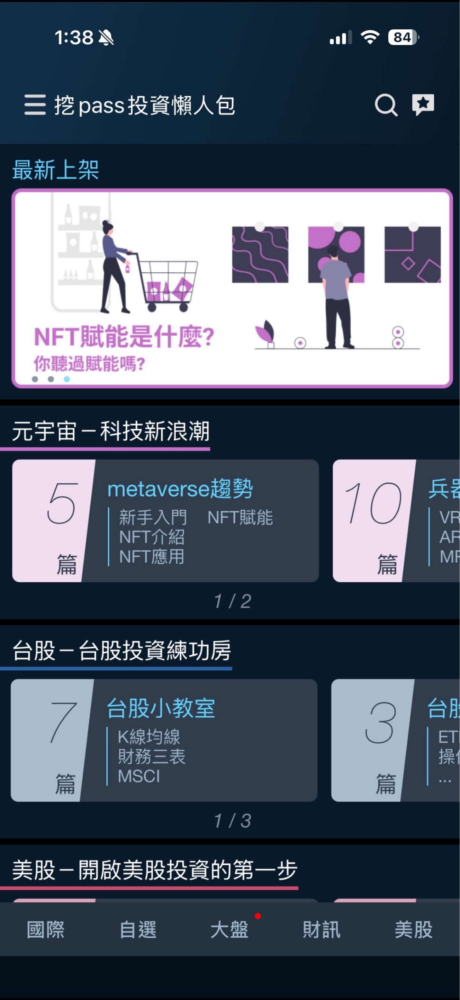
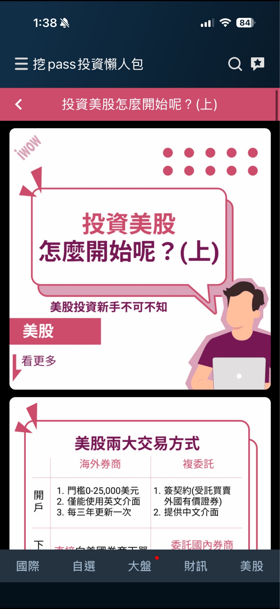
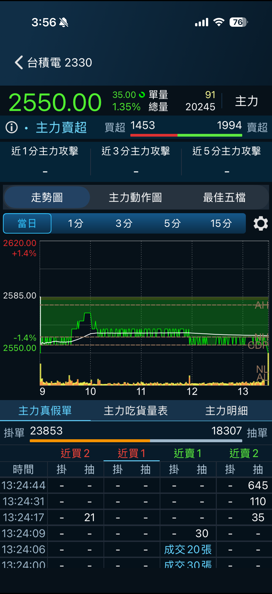
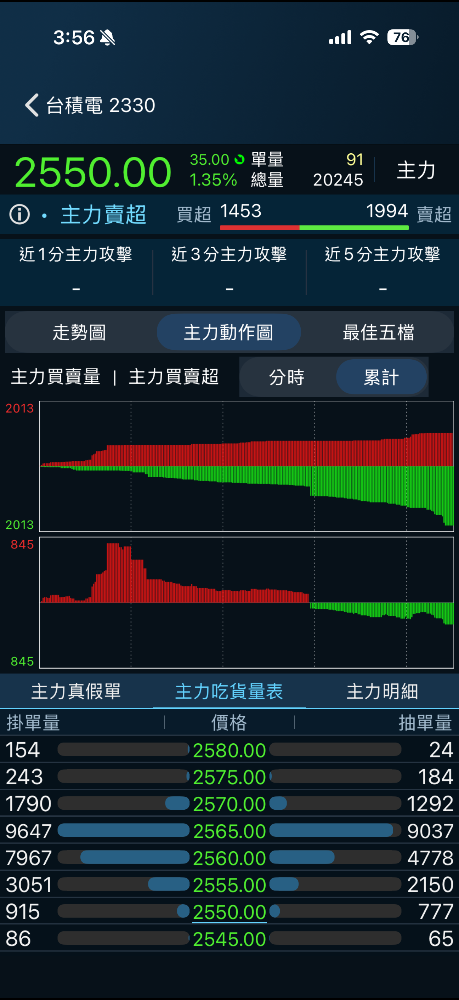
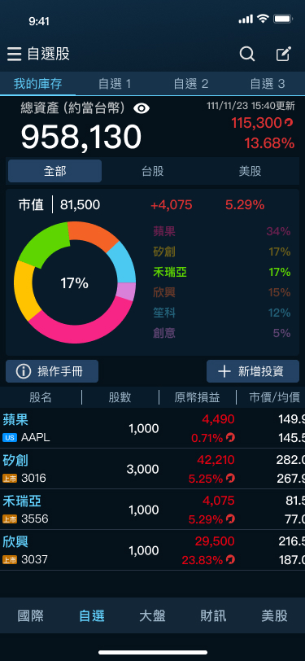
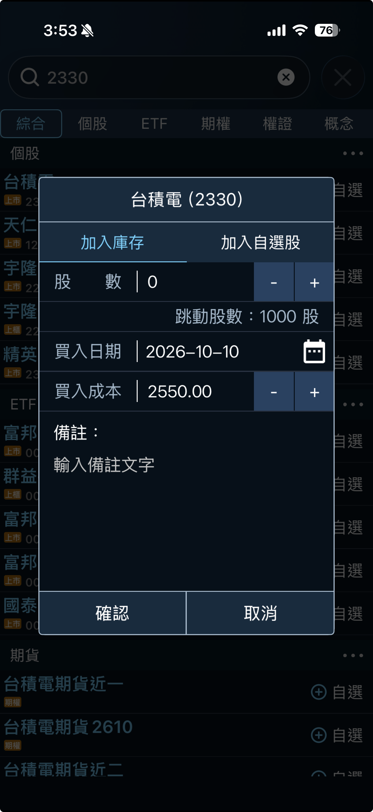

Case Study · New Feature Ideation
Pitching and shipping three brand-new capabilities on iWow — a market-education content hub, a subscription institutional-flow tracker, and a virtual portfolio tool — the first product I was ever responsible for
Summary
iWow — Systex's real-time stock-quote app — was the first product I was ever responsible for. Over about two years I pitched and shipped three new features that each solved a different problem: iWowpass turned confusing financial jargon into an in-app content hub for market newcomers; Smart Money X-Ray gave subscribers a way to see when large institutional players were buying or selling; and Virtual Portfolio let users track holdings from any brokerage inside iWow, giving a read-only quote app a reason to be opened every day.
Background & Challenge
iWow is Systex's real-time stock-quote app, which grew past 500,000 users over the time I worked on it. As the first product I owned, I wasn't just maintaining existing screens — I was expected to spot opportunities and pitch new features myself, then design and ship them.
This case covers the three brand-new capabilities I ideated and shipped on iWow, each aimed at a different part of the user's journey: onboarding a market beginner (iWowpass), supporting an active trader's decisions (Smart Money X-Ray), and giving a casual user a reason to come back daily (Virtual Portfolio).
The Three Features
Turning stock-market jargon into something a beginner can actually use
Many iWow users were stock-market beginners who found basic financial terms genuinely confusing. The goal was simple: the more comfortable people felt with these concepts, the more likely they were to start investing — which, for a brokerage information service like ours, meant more engaged users.
I designed iWowpass, an in-app content hub organised into four categories: Taiwan Stocks — K-lines, the three financial statements, MSCI indices, ETF types, sector concept stocks; US Stocks — cross-border brokerage trading, dividends, trading rules, profiles of companies like Airbnb and Netflix; International Finance — macro trends, inflation, rate hikes, bonds, futures & options, commodities; and Metaverse — the NFT/AR/VR/Magic Leap wave that was peaking at the time. Because iWowpass was built as a webpage embedded in the app, I could update its content anytime without waiting on an app release. After launch, GA tracking showed the page pulling in roughly a hundred views a day.


Surfacing institutional buy/sell signals hidden inside the tick data
In a fast-moving market, one of the best strategies for a retail investor is to follow what institutional players ("Smart Money") are doing — but there was no easy way to see that.
I designed Smart Money X-Ray around our intraday tick data: using each stock's normal trading volume as a baseline, we flagged unusually large single buy or sell orders as likely institutional activity for users to reference. The feature bundled several pieces: short-interval (1/3/5/15-minute) K-lines combined with CDP reference lines and institutional volume for fast trend reads; an intraday and cumulative Smart Money Activity bar chart showing the buy/sell ratio; a true-vs-cancelled order check, since a large order could be pulled before it filled; a per-price absorption table; and a full action log — plus a daily buy/sell signal at the top of the screen. Smart Money X-Ray shipped as a subscription feature within iWow, growing to over 500 subscribers.


Virtual holdings tracking to turn a viewer into a daily habit
Unlike a brokerage, iWow is an information service — we couldn't let users place trades through the app, which capped how much time they spent with it; at best, it was a quote-watching tool with no account data behind it.
I proposed Virtual Portfolio: letting users manually add holdings they already owned elsewhere (Taiwan or US stocks), with share count, buy date, buy price, and a free-text note. The company's exclusive US-quote data source made tracking both markets in one app a genuine differentiator. Once added, a holding feeds into a live total-assets view with P&L and return rate, a pie-chart breakdown by holding (switchable between all / Taiwan / US), and per-stock market price vs. average cost, market value vs. cost basis, and P&L vs. return. The feature moved iWow from a pure quote viewer to one with real — if virtual — account-level data, directly increasing time spent in-app.


Outcome & Reflection
All three features shipped to iWow's 500,000+ user base, but each was solving a different kind of problem — iWowpass was a growth and education play, Smart Money X-Ray was a monetisable analytics feature for active traders, and Virtual Portfolio was a retention play for an app that couldn't own the actual transaction. Being the first product I was ever responsible for, iWow is where I learned to recognise which of those three jobs a given opportunity actually called for, rather than reaching for the same kind of feature every time.
Designed a webpage-based content hub I could update independently of app releases, pulling in roughly 100 views a day by GA tracking
Bundled five distinct institutional-flow tools — reference-line charts, action charts, true/false order detection, an absorption table and a full log — into one paid feature
Shipped virtual portfolio tracking that gave a read-only quote app a daily reason to open, without iWow ever processing a real transaction
Note — iWow is a Taiwanese product, so the interface screenshots throughout this case study remain in Traditional Chinese, their original language.